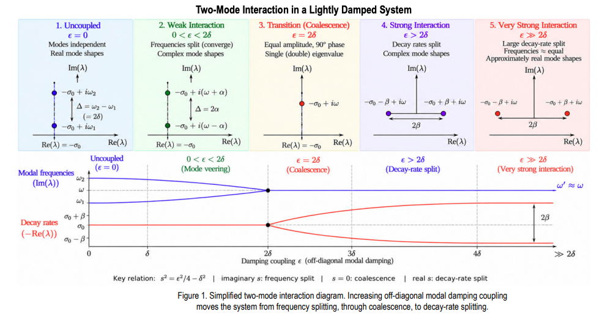

01
NASA Names Astronaut Christina Koch Acting Deputy Chief Engineer
A engenheira e astronauta da NASA, Christina Koch, atuará como engenheira-chefe interina da agência a partir de domingo, 1º de novembro, após a aposentadoria de
NASA Breaking NewsNASA Names Astronaut Christina Koch Acting Deputy Chief Engineer BBC WorldMissiles intercepted near Riyadh after Saudi coalition hits Yemen fuel depot
BBC WorldMissiles intercepted near Riyadh after Saudi coalition hits Yemen fuel depot BBC WorldTrump destitui Kimberly Guilfoyle do cargo de embaixadora dos EUA na Grécia após acusações de corrupção
BBC WorldTrump destitui Kimberly Guilfoyle do cargo de embaixadora dos EUA na Grécia após acusações de corrupção BBC World'Eu falaria com a TV': os companheiros pagos trazendo calor à solidão da China
BBC World'Eu falaria com a TV': os companheiros pagos trazendo calor à solidão da China BBC News Brasil'De volta para o futuro'? Por que o Brexit está retornando ao debate político do Reino Unido
BBC News Brasil'De volta para o futuro'? Por que o Brexit está retornando ao debate político do Reino Unido BBC AfricaEx-presidente nomeado líder da nova coligação rebelde na RD Congo
BBC AfricaEx-presidente nomeado líder da nova coligação rebelde na RD Congo BBC WorldBulgária convoca embaixador russo após navio afundar em ataque de drone no Mar Negro
BBC WorldBulgária convoca embaixador russo após navio afundar em ataque de drone no Mar Negro BBC Science'Jellyfish' effect lights up US sky after SpaceX launch
BBC Science'Jellyfish' effect lights up US sky after SpaceX launch BBC WorldAtaques russos atingiram importante usina de energia em Kyiv, diz Zelensky
BBC WorldAtaques russos atingiram importante usina de energia em Kyiv, diz Zelensky BBC WorldArgentina visa o Reino Unido em ação judicial sobre exploração de petróleo nas Malvinas
BBC WorldArgentina visa o Reino Unido em ação judicial sobre exploração de petróleo nas Malvinas BBC WorldQuem é o culpado pela poluição tóxica que asfixia o Sudeste Asiático?
BBC WorldQuem é o culpado pela poluição tóxica que asfixia o Sudeste Asiático? BBC News BrasilO ciberataque que esquentou geladeiras de supermercados na França, estragou alimentos e causou milhões em prejuízo
BBC News BrasilO ciberataque que esquentou geladeiras de supermercados na França, estragou alimentos e causou milhões em prejuízo BBC AfricaEnferrujado ou algo mais? A preocupação da África do Sul após a derrota da Austrália
BBC AfricaEnferrujado ou algo mais? A preocupação da África do Sul após a derrota da Austrália BBC EuropeRonaldo marca após jogo adiado por alerta de míssil
BBC EuropeRonaldo marca após jogo adiado por alerta de míssil NASA Breaking NewsComparing Off-World Rover Driving Distances
NASA Breaking NewsComparing Off-World Rover Driving Distances BBC WorldHomem saudita acusado de plantar dispositivo de gravação ‘sofisticado’ no escritório da OpenAI
BBC WorldHomem saudita acusado de plantar dispositivo de gravação ‘sofisticado’ no escritório da OpenAI BBC EuropeTrump diz que Kimberly Guilfoyle pode ser demitida do cargo de enviada da Grécia após suposta má conduta
BBC EuropeTrump diz que Kimberly Guilfoyle pode ser demitida do cargo de enviada da Grécia após suposta má conduta BBC WorldPor que os solitários na China estão contratando “crianças temporárias”
BBC WorldPor que os solitários na China estão contratando “crianças temporárias” BBC WorldChefe do MI5 alerta sobre ameaças ao Reino Unido por parte da Rússia, Irã e IA
BBC WorldChefe do MI5 alerta sobre ameaças ao Reino Unido por parte da Rússia, Irã e IA BBC AfricaRuanda sediará a primeira corrida da F1 na África desde 1993
BBC AfricaRuanda sediará a primeira corrida da F1 na África desde 1993 BBC Middle EastNo campo de batalha do deserto do Iémen, está a ser travada uma guerra com consequências globais
BBC Middle EastNo campo de batalha do deserto do Iémen, está a ser travada uma guerra com consequências globais NASA Breaking NewsNASA’s Record-Setting Perseverance Rover Team
NASA Breaking NewsNASA’s Record-Setting Perseverance Rover Team BBC WorldZelensky está certo ao dizer que os ataques aos data centers derrubaram os bots russos?
BBC WorldZelensky está certo ao dizer que os ataques aos data centers derrubaram os bots russos? BBC EuropeSeis centrais energéticas ucranianas atingidas pela Rússia desde que Trump anunciou o cessar-fogo, diz Zelensky
BBC EuropeSeis centrais energéticas ucranianas atingidas pela Rússia desde que Trump anunciou o cessar-fogo, diz Zelensky BBC AsiaEight injured in South Korea knife attack
BBC AsiaEight injured in South Korea knife attack BBC EuropeDrones podem transportar entregas da França para Alderney
BBC EuropeDrones podem transportar entregas da França para Alderney BBC AfricaVice-chefe da polícia da África do Sul demite-se após ser acusado de crimes sexuais
BBC AfricaVice-chefe da polícia da África do Sul demite-se após ser acusado de crimes sexuais BBC Middle EastAssistir: CCTV mostra pessoas se protegendo enquanto míssil atinge o aeroporto de Riad
BBC Middle EastAssistir: CCTV mostra pessoas se protegendo enquanto míssil atinge o aeroporto de Riad NASA Breaking NewsPerseverance Navcam Image Marks Record Drive
NASA Breaking NewsPerseverance Navcam Image Marks Record Drive BBC Middle EastAmeaças de morte e isolamento – o custo do combate à violência sexual no Iraque
BBC Middle EastAmeaças de morte e isolamento – o custo do combate à violência sexual no Iraque BBC USAnálise: As dores de cabeça globais de Trump pioram semanas antes de eleições cruciais
BBC USAnálise: As dores de cabeça globais de Trump pioram semanas antes de eleições cruciais BBC AsiaLíderes ‘baratas’ da Índia são detidos após entrarem em local de protesto barricado
BBC AsiaLíderes ‘baratas’ da Índia são detidos após entrarem em local de protesto barricadoA engenheira e astronauta da NASA, Christina Koch, atuará como engenheira-chefe interina da agência a partir de domingo, 1º de novembro, após a aposentadoria de
A coligação liderada pela Arábia Saudita que luta no Iémen atingiu um depósito de combustível perto da capital controlada pelos Houthi, Sanaa.
Guilfoyle disse que as alegações de conduta imprópria eram falsas e que ser embaixador era a “honra de uma vida”.
À medida que a solidão aumenta na China, surge uma nova indústria para fornecer companheirismo e apoio.
Pela primeira vez desde que o Reino Unido deixou a União Europeia, o país tem um primeiro-ministro que quer debater o Brexit 'sem hesitar'.
Joseph Kabila já tinha negado ter ligações com os rebeldes M23, que controlam grande parte do leste da RD Congo.
Seis tripulantes são resgatados, mas 10 estão desaparecidos depois que um navio mercante foi afundado durante a noite, diz a Bulgária.
O presidente do Tribunal Superior Eleitoral (TSE), Kassio Nunes Marques, determinou há pouco a reativação do canal “Exército do Lula”, criado no WhatsApp para postagens de apoios ao candidato à reeleição Luiz Inácio Lula da Silva (PT). O canal é administrado pelo deputado federal André Janones (Rede-MG). A medida foi tomada após a campanha de Lula registrar o canal no tribunal , conforme foi determinado pelo ministro na manhã de hoje. Nesta terça (13), o presidente do TSE havia determinado, pela segunda vez, a retirada do ar do canal , alegando a falta de registro como motivo. A decisão foi tomada em processo administrativo, que não precisa p
Diante da urgência de uma crise climática, os temas relativos ao meio ambiente se impõem nas agendas dos candidatos ao segundo turno das eleições. Flávio Bolsonaro (PL) e Luiz Inácio Lula da Silva (PT) apresentam soluções diferentes - apesar da convergência em alguns pontos - para mitigar problemas relacionados à conservação ambiental às mudanças climáticas. Notícias relacionadas: Conheça as propostas de Flávio e Lula para a segurança pública. Lula defende Sul Global; Flávio quer proximidade com EUA e Israel. Congresso mais conservador deve mudar agenda, diz professor. Enquanto o programa do candidato Lula trata o enfrentamento às mudanças cl
Em mais uma decisão, a Justiça do Rio restabeleceu nesta terça-feira (13) a determinação de que a partida entre Vasco da Gama e Boca Juniors, marcada para o dia 20 deste mês e válida pela semifinal da Copa Sul-Americana, seja realizada no Estádio do Maracanã. A decisão é do desembargador Joaquim Domingos de Almeida Neto, do Órgão Especial do Tribunal de Justiça do Rio de Janeiro (TJRJ), que deferiu a tutela recursal antecipada, determinando à Fla-Flu Serviços S.A. que efetive a disponibilização do Estádio Jornalista Mário Filho, o Maracanã, para a realização da partida entre Vasco da Gama e Boca Juniors, no dia 20 de outubro, às 21h30. Notíci
Na volta do feriado, o dólar fechou em alta, e a bolsa recuou após os recordes da semana passada. A moeda estadunidense voltou a ficar acima de R$ 5, apesar da queda no exterior. A bolsa brasileira caiu 1,04%, pressionada por ajustes após as máximas históricas e pelo cenário eleitoral. No mercado internacional, o petróleo fechou sem direção, com o barril internacional recuando e o barril dos Estados Unidos encerrando em alta. Números do dia Dólar à vista: R$ 5,023, (+0,74%) Ibovespa: 206.887,52 pontos (-1,04%) Petróleo Brent: US$ 105,69 por barril (-0,9%) Petróleo WTI: US$ 94,14 por barril (-0,43%). Dólar em alta Notícias relacionadas: Dinhei

Em entrevista à BBC, Meredith Whittaker, chefe de fundação que criou aplicativo de mensagens criptografadas, afirma que riscos da inteligência artificial têm sido mal compreendidos.

A atriz de Legalmente Loira enfrenta duas acusações de agressão por supostamente chutar um policial e uma enfermeira após supostamente atacar comissários de voo.
Um efeito de 'água-viva' iluminou o céu nos EUA após o lançamento do foguete SpaceX Falcon 9.
O presidente ucraniano diz que os ataques com mísseis balísticos ocorreram “sem aviso prévio dos nossos parceiros”.
A ação apresentada a um tribunal marítimo internacional é o mais recente desenvolvimento de uma disputa crescente sobre as Ilhas Malvinas.
A raiva aumenta contra as empresas acusadas de queimar terras na Indonésia e contra as autoridades que não conseguiram impedi-las.
Centenas de lojas foram alvo do ataque cibernético noturno, que estragou alimentos frescos e congelados avaliados em milhões de euros.
A Austrália completa vitória de 214 corridas sobre a África do Sul em Durban. O que significa uma derrota pesada para os campeões mundiais?
Cristiano Ronaldo marca na vitória do Al-Nassr em uma partida da Liga dos Campeões da AFC que foi atrasada uma hora por causa de um alerta de míssil em Riad.

Para Rubens Glezer, da FGV, é possível que Corte faça concessões ao futuro governo para evitar a cassação de ministros. Ele analisa as propostas de mudança no Supremo dos candidatos da direita e da esquerda.

O pontífice foi diagnosticado com câncer de pulmão após se submeter a uma cirurgia para remover o lobo inferior do pulmão direito, informou o Vaticano.
Este infográfico ilustra as distâncias percorridas por vários rovers na superfície da Lua e de Marte na Terra. Dos veículos mostrados, os rovers da NASA em Marte
Os promotores dizem que o dispositivo, embrulhado em papel higiênico, foi encontrado inserido em uma porta USB na parte traseira de uma TV em uma sala de conferências executiva.
"We're not happy," says the president about his son's ex-fiancée following reports of improper behaviour.
Uma nova indústria apelidada de “economia da solidão” surgiu na China, com pessoas a contratarem-se como acompanhantes para ajudar os idosos.
Sir Ken McCallum diz que as operações para combater o terrorismo e as ameaças estatais são agora aproximadamente de “escala igual”.
Ruanda assina contrato de 10 anos com a Fórmula 1 para sediar corridas no país africano, a partir “no início da década de 2030”.
A guerra civil arraigada no Iémen é agora impossível de ignorar. Mas nas salas de operações da cidade portuária de Aden, a geopolítica parece remota.

Senador e candidato à Presidência compartilhou vídeo que mostra uma mulher supostamente usando drogas como se cena tivesse sido registrada em manifestação a favor de Lula; gravação foi feita em outro país e circulava na rede social antes do ato

Especialistas dizem que atos de rua podem mobilizar a base e reduzir a abstenção, mas veem pouca chance de mudar votos.
Membros da equipe da missão Perseverance Mars da NASA se reúnem no Mars Yard no Laboratório de Propulsão a Jato da agência no sul da Califórnia com um certificado
Especialistas dizem que não há evidências de que os trolls russos tenham sido afetados pelos ataques Yandex da Ucrânia.
Apesar de o presidente dos EUA ter anunciado que a infraestrutura energética não seria direcionada, os ataques continuaram, afirma a Ucrânia.
Usando facas amarradas às mãos, um homem teria esfaqueado várias pessoas em um shopping center em Incheon.
Uma empresa em Paris tem trabalhado com a Câmara de Comércio de Alderney num estudo de viabilidade.
Shadrack Sibiya negou ter preparado um jovem de 16 anos e estuprado um jovem de 18 anos.
Imagens de dentro do aeroporto mostram o momento em que ocorreu a greve, no sábado.

Tribunal tomou sequência de decisões banindo e, posteriormente, liberando comunidade pró-Lula administrada pelo deputado André Janones (Rede-MG). Após liberação do canal, Kássio Nunes Marques ordenou investigação.
O presidente do Senado, Davi Alcolumbre (União-AP), informou nesta terça-feira (13) que um requerimento para acelerar a votação da Proposta de Emenda Constitucional (PEC) do fim da escala 6x1 já conta com assinaturas suficientes para ser apreciado em plenário. Com isso, a votação da PEC pode ocorrer em dois turnos já nesta quarta-feira (14), se o requerimento for aprovado. "Vários senadores assinaram um requerimento de calendário especial. Já há o número regimental para a apreciação do calendário especial na tarde da sessão de amanhã", disse Alcolumbre, pouco antes de encerrar a sessão deliberativa desta terça. Notícias relacionadas: MDB Nort
Rastros de rover e uma paisagem rochosa marciana são mostrados nesta imagem capturada por uma das câmeras de navegação (navcams) a bordo do rover Perseverance Mars da NASA
As mulheres dizem que partilham histórias de abuso para realçar a questão, apesar da pressão social e dos receios de segurança.
À medida que o dia das eleições se aproxima, o presidente volta os olhos para o exterior em busca de ajuda para resolver um problema interno urgente.
Os manifestantes escalaram barricadas no centro de Delhi para exigir a renúncia do chefe eleitoral devido às listas de eleitores revisadas.

Na sua primeira entrevista desde que foi forçado a deixar o cargo, o Gen Syrskyi fala sobre o futuro da Ucrânia na guerra.

Alguns temem que o impasse do governo com os apoiantes do antigo primeiro-ministro possa trazer mais instabilidade, e não menos.

Três pequenas naves espaciais apoiadas pela NASA, juntamente com muitas cargas comerciais, são mostradas antes de serem encapsuladas em um SpaceX Falcon 9 antes do lançamento em outubro.

Isso ocorre depois que o grupo armado atingiu o aeroporto internacional de Riad e outras instalações, matando 13 pessoas, em uma escalada significativa.

Embora Volodymyr Zelensky, da Ucrânia, sugira que assinaria um cessar-fogo nas infra-estruturas energéticas, a Rússia pouco disse.

A disputa levanta questões sobre a governança, os planos de sucessão e o futuro do conglomerado indiano.
O presidente do Supremo Tribunal Federal (STF), ministro Edson Fachin, se Notícias relacionadas: Moraes aponta “escolha seletiva” e pede divulgação de todo caso Master. Conselho do MPF rejeita abertura de investigação contra Gonet . Gilmar acusa Mendonça de usar caso Master para interferir em eleição . Após a apresentação das informações, o plenário da Corte vai se pronunciar sobre a eventual abertura de investigações contra os ministros citados. A Procuradoria-Geral da República (PGR) também deverá apresentar parecer prévio antes da análise pelo plenário. A movimentação ocorreu após integrantes da Corte cobrarem o presidente do STF para que
Anúncio de vaga para conselheiro-chefe do NASA Glenn Research Center

Orla Guerin viajou através do Iémen, com forças leais ao seu governo internacionalmente reconhecido, até um remoto campo de batalha no deserto onde os rebeldes Houthi foram desalojados há poucos dias.

Dan Johnson, da BBC, reporta de Kiev, onde os ucranianos enfrentam outro inverno com cortes de eletricidade.

A marcha segue-se a um fim de semana caótico em Deli, onde milhares de manifestantes foram detidos pela polícia.

Os especialistas estão a examinar as formas como os agricultores da Escócia podem diversificar e adaptar-se a um clima em mudança.

Um módulo lunar da Voyager Technologies completou quase três meses de testes ambientais no Laboratório de Propulsão a Jato da NASA, no sul da Califórnia, em

O engenheiro Robert Pether disse que sua esposa e filhos “viveram isso todos os dias comigo”.
O acordo comercial entre o Mercosul e a União Europeia impulsionou em 30,7% as exportações brasileiras para o bloco europeu entre maio e setembro de deste ano, na comparação com o mesmo período do ano passado. O dado foi divulgado nesta terça-feira (13) pelo ministro do Desenvolvimento, Indústria, Comércio e Serviços, Márcio Elias Rosa, durante evento em Brasília. Além deste dado, o Brasil abriu 700 mercados internacionais para produtos agropecuários desde 2023. No acumulado de janeiro a setembro, as exportações brasileiras para a UE somaram US$ 44,17 bilhões , um crescimento de 20% em relação aos nove primeiros meses de 2025. Notícias relaci

Para obter mais informações, entre em contato com Joel W. Sills, Centro de Pesquisa Langley, joel.w.sills@nasa.gov

O Papa Leão passou por uma cirurgia bem-sucedida para remover um lobo inferior do pulmão direito, disse o Vaticano.

Um módulo de pouso comercial que estará na vanguarda dos esforços da NASA para estabelecer uma Base Lunar, o primeiro posto lunar da humanidade, passou por uma série de testes críticos.

Tanto o presidente da Câmara Municipal como o presidente da Câmara manifestaram apoio ao fim da prática.

A 35ª missão comercial de reabastecimento da NASA SpaceX decolou às 6h33 EDT de terça-feira a bordo de um foguete Falcon 9 do Complexo de Lançamento Espacial 40 em Cabo Canaveral

Senador e candidato à Presidência diz pela primeira vez que votará a favor da proposta, defendida pela 'maioria dos trabalhadores', segundo ele.

Após 237 dias e mais de 3.700 órbitas ao redor da Terra a bordo da Estação Espacial Internacional, Sophie Adenot está de volta à Terra!
O Banco Central (BC) informou nesta terça-feira (13) que ainda há R$ 5,79 bilhões em dinheiro esquecido em bancos e outras instituições financeiras. Os valores, contabilizados até agosto de 2026, podem ser consultados por pessoas físicas, incluindo falecidos, e empresas por meio do Sistema Valores a Receber (SVR). Do total disponível, R$ 4,31 bilhões pertencem a 23,94 milhões de pessoas físicas. Outros R$ 1,48 bilhão são destinados a 2,36 milhões de empresas. Notícias relacionadas: Produção de motos no Brasil cresce e tem melhor setembro desde 2011. FMI prevê crescimento de 2,2% do PIB do Brasil em 2026. Governo anuncia perdão de dívidas e pa

Davis foi considerado culpado no mês passado por seu papel na morte do falecido astro do rap em um tiroteio em 1996.
A escolha das obras do Programa Nacional do Livro e do Material Didático (PNLD) para a educação infantil (creche e pré-escola) para o triênio 2026-2029 deve ser feita a partir desta terça-feira (13) até o dia 31 de outubro. As escolas públicas devem selecionar as obras literárias e informativas para crianças da creche e da pré-escola, assim como o material de apoio pedagógico para professores da educação infantil, pelo sistema PNLD Gestão , do Ministério da Educação (MEC). Notícias relacionadas: MEC divulga avaliação de livros didáticos . OCDE: 9% dos professores no Brasil não têm qualificação completa. Programa de bolsas vai incentivar forma
No mês de setembro, a indústria brasileira de motocicletas cresceu 10,4% em relação ao ano anterior, com 186.758 unidades produzidas. Segundo balanço divulgado nesta terça-feira (13) pela Associação Brasileira dos Fabricantes de Motocicletas, Ciclomotores, Motonetas, Bicicletas e Similares (Abraciclo), esse foi o melhor mês de setembro desde 2011, apesar do recuo de 8,5% em relação a agosto deste ano. Notícias relacionadas: FMI prevê crescimento de 2,2% do PIB do Brasil em 2026. Governo anuncia perdão de dívidas e pacote de estímulo para MEIs. Mercado eleva previsão da inflação para 5,22% em 2026. Considerando-se o acumulado entre janeiro e s

Segundo nova decisão de presidente do TSE, canal só poderá voltar a funcionar após a campanha do presidente Lula registrá-lo como um instrumento formal de campanha ao TSE; decisão veio após analise preliminar do TSE não identificar notícias falsas no canal.

A escola enfrentou um alvoroço sobre como lidou com as acusações de agressão feitas por uma mulher conhecida como Jane Doe.

Os estudantes manifestantes em França disseram a James Waterhouse, da BBC, que continuarão a agir até que mudanças sejam feitas. Os protestos já entraram em sua quarta semana.

Mitte, que tinha paralisia cerebral, interpretou Walter White Jr. na série vencedora do prêmio Emmy.

A polícia afirma que informações preliminares sugerem que o homem que morreu no parque de diversões da Geórgia caiu de um passeio.

Sarah Smith, da BBC, estava na sala e descreveu o desempenho de Zacharia e o momento em que ela deu a notícia sobre o pedido de demissão de Kimberly Guilfoyle.

Acompanhe as intenções de voto para Lula e Flávio Bolsonaro no segundo turno da eleição presidencial de 2026, segundo o Agregador de Pesquisas da BBC News Brasil.

O enclave espanhol no Norte de África ainda enfrenta as consequências de um afluxo de 70 mil pessoas vindas de Marrocos em Julho.

LGBTQ and human rights activists warmly welcomed the move, but call for changes to other Orbán-era laws.

Denby McLaren tem uma vértebra quebrada e múltiplas fraturas no pé

A gangue prendeu os funcionários logo após a detenção de um membro de alto escalão, exigindo sua libertação.

A programação da BBC ainda chega ao público em ondas curtas, ondas médias, via satélite e online.

Uma série de ligações, obtidas pela Associated Press, revelam que os serviços de emergência demoraram a chegar a Pike.

Uma coruja-das-torres e 15 filhotes são anilhados para ver se a agricultura voltada para a conservação está funcionando.

O El Niño continuou a fortalecer-se, com várias medidas importantes agora em território recorde. Simon King explora como isso se compara aos eventos anteriores.

Londrinos de quatro a 18 anos podem sugerir nomes para os kits, nascidos em Paradise Fields, até 7 de dezembro.

A segunda parcela do Planet Zoo defende a criação de animais para serem soltos em reservas de vida selvagem.

Organização CTRL+Z recebeu denúncias de usuários que relatam ter tido publicações limitadas e até perfis inteiros removidos de redes sociais. Meta defende moderação e diz que levantamento tem amostragem reduzida e selecionada 'de forma intencional'.

O assassino de Colleen Slemmer acabou sendo levado ao hospital depois que duas doses de injeção letal não a mataram.

As notas de estudantes de vários países caíram a níveis recordes em uma avaliação internacional de aprendizagem; leitura é um dos principais problemas.

Mitte, que vivia com paralisia cerebral, estrelou como Walter White Jr na série dramática vencedora do Emmy.

Os seus combates com forças pró-governo na costa do Mar Vermelho do Iémen e os ataques à Arábia Saudita colocaram os holofotes sobre o grupo apoiado pelo Irão.

O Conselho da Cornualha introduz novas penalidades após registrar 17.500 incidentes em cinco anos.

Grupos do norte da Inglaterra e do sul da Escócia podem concorrer a financiamento para ajudar as criaturas.

Uma análise aprofundada das principais pesquisas, disputas e questões antes de uma eleição que definirá os últimos dois anos de Trump como presidente.

O especialista em cavernas de 31 anos foi encontrado vivo, a 10 metros de profundidade, depois que mais de 100 equipes de emergência trabalharam para libertá-lo.

Pela primeira vez desde que o Reino Unido deixou a UE, temos um primeiro-ministro que debaterá “com firmeza” o Brexit, afirma o editor político da BBC, Chris Mason.

“Nenhuma gota passou pelas nossas torneiras nos últimos três meses”, disse um morador local à BBC.

As amostras de tecido ovariano retiradas de Kassandra Bacon foram reimplantadas com sucesso 23 anos depois, permitindo que ela desse à luz seu filho aos 44 anos.

Os pesquisadores dormirão em seu navio para evitar caranguejos gigantes que podem levantar pesos pesados, partir cocos e podem ter desempenhado um papel na morte de Earhart.

O voo da Itália para a Austrália foi cancelado depois que os passageiros da viagem anterior do avião reclamaram de picadas de insetos.

A médica Consuelo Walss-Bass estuda há décadas as causas biológicas da esquizofrenia. Sua mãe e sua irmã sofrem da doença, que deixou marcas profundas na sua vida desde a infância.

Quem parece feliz por fora, mas sofre por dentro, pode ter uma forma atípica de depressão. Mas esconder o que realmente sente pode prejudicar a saúde mental

Ione Wells, da BBC, relata que, do lado de fora da casa do representante de Minnesota, vários agentes de imigração foram vistos carregando caixas da casa para uma van.

Grandes ondas do ciclone pós-tropical atingiram casas em Long Beach e provocaram inundações em partes de Las Vegas perto da famosa Strip.

O filme caiu cerca de 60% em seu segundo fim de semana e pode se tornar um dos maiores fracassos de Hollywood.

US officials had been offering a reward of $10m (£7.5m) for information leading to Álvaro Pulido's arrest.

O correspondente de segurança Frank Gardner explica como os ataques de precisão e as táticas de guerrilha dos Houthis, apoiados pelo Irão, dificultaram a obtenção de vantagem pelas forças sauditas.

Há muitos relatos de passageiros que sentem mais cinetose (enjoo do movimento) quando estão nos carros elétricos.

Filho do ex-presidente Jair Bolsonaro defende enxugar a máquina e fazer cortes em ministérios, enquanto Lula fala de valorização de servidores.

O Nepal ainda tenta recuperar das cheias catastróficas que ocorreram há menos de dois meses, deixando milhares de mortos e desaparecidos.

Aqueles que vivem em áreas atingidas pelas enchentes dizem que estão preocupados e já começaram a se preparar.